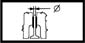

VALVE GUIDES
- Path
- Technical Data > Manufacturing data > 10 ENGINE > 1016 CYLINDER HEAD/S > VALVE GUIDES
- Kind
- technical data / specifications
- Applies to
- all engines; all production periods
- Interactive page
- https://sloeber94.github.io/elrnDB-a156/en/#/3233516
Applies to: all engines; all production periods
Inner diameter (mm) | Validity |  | ||
|---|---|---|---|---|
5.40 ÷ 5.60 | 2.4 JTD 20v | |||
Inner diameter (mm) | Validity | |||
8.022 ÷ 8.040 | 1.9 JTD 8v 2.4 JTD 10v | |||
Outer diameter (mm) | Validity |  | ||
11.010 ÷ 11.030 | 2.4 JTD 20v | |||
Outer diameter (mm) | Validity | |||
14.010 ÷ 14.030 | 1.9 JTD 8v 2.4 JTD 10v | |||
Oversizes (mm) 0.05, 0.10, 0.25 | ||||
Outer diameter oversize (mm) | Validity |  | ||
0.05 / 0.10 / 0.25 | 1.9 JTD 8v 2.4 JTD 10v | |||
Valve guide internal diameter (reaming) (mm) | Validity | |||
7.022 ÷ 7.040 | 2.0 JTS | |||
Valve guide outer diameter (mm) | Validity | | ||
13.010 ÷ 13.030 | 2.0 JTS | |||
Valve guide outer diameter oversize (mm) | Validity | | ||
0.20 | 2.0 JTS | |||
Valve guide oversize (mm) | Validity | |||
0.05 - 0.1 - 0.2 - 0.25 | 2.4 JTD 20v | |||
Exhaust outer diameter (mm) | Validity | |||
|---|---|---|---|---|
12.050 - 12.068 (*) | 2.5 V6 | |||
Oversize (mm) 0.20 | ||||
Inlet outer diameter (mm) | Validity | |||
|---|---|---|---|---|
12.040 - 12.051 (*) | 2.5 V6 | |||
Oversize (mm) 0.20 | ||||
Valve guide internal diameter (reaming) (mm) | Validity | |||
|---|---|---|---|---|
7.000 ÷ 7.015 | 3.2 V6 | |||
Valve guide outer diameter (mm) | Validity | | ||
Exhaust | ||||
12.050 ÷ 12.068 | 3.2 V6 | |||
Valve guide outer diameter (mm) | Validity | |||
Intake | ||||
12.040 ÷ 12.051 | 3.2 V6 | |||
Valve guide outer diameter oversize (mm) | Validity | | ||
Exhaust | ||||
0.20 | 3.2 V6 | |||
Valve guide outer diameter oversize (mm) | Validity | |||
Intake | ||||
0.20 | 3.2 V6 | |||